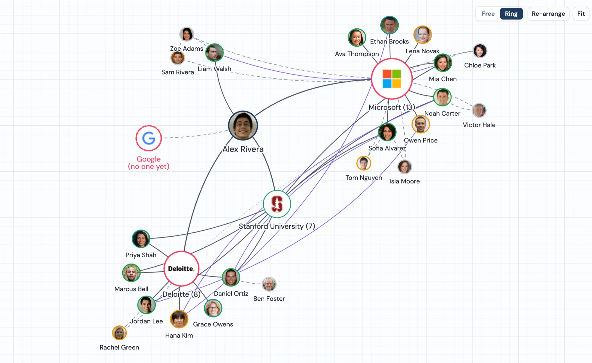
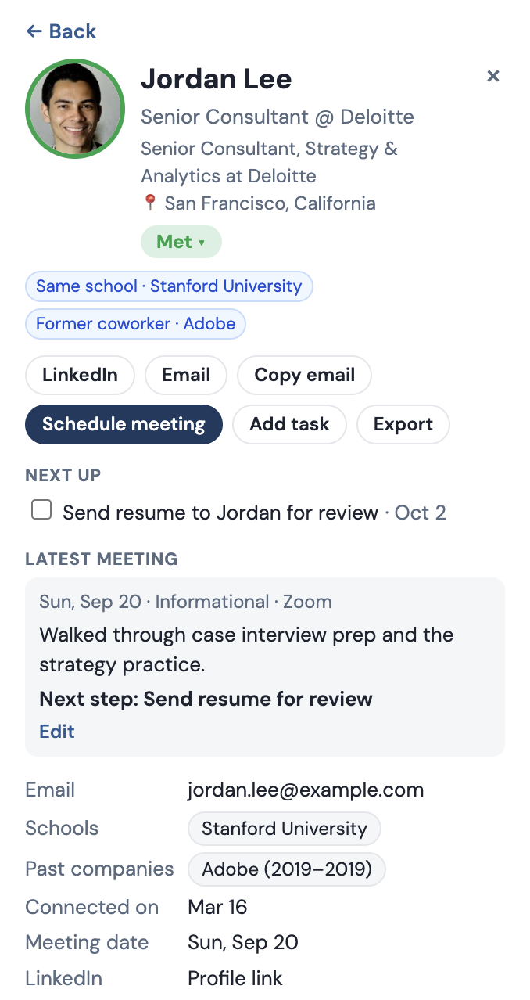
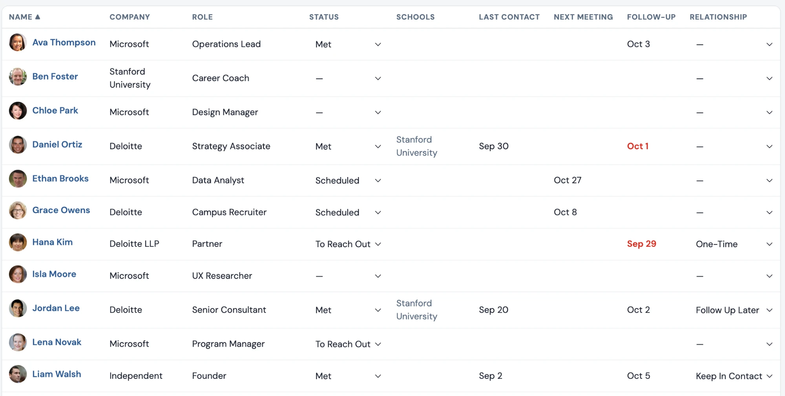
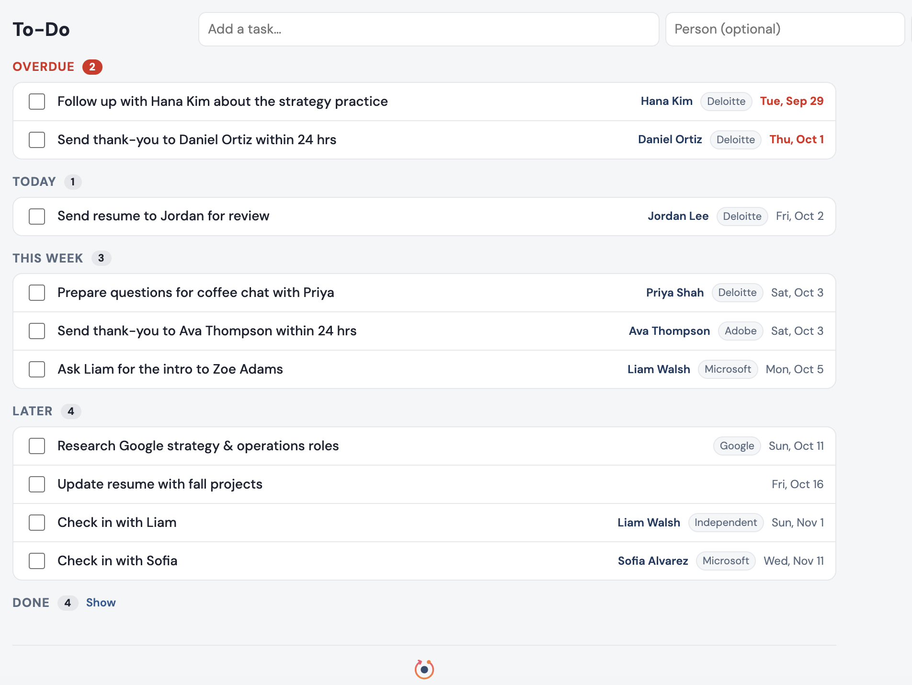
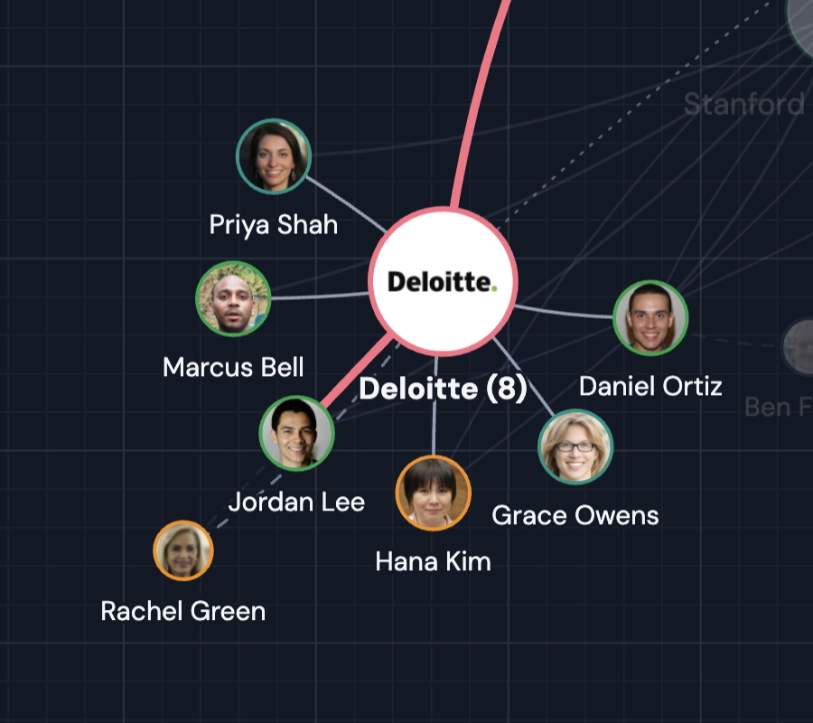

Turn the people you know into a map.
Orbit is a free website for job and internship networking. It shows who you know, where they work, and who could introduce you to the companies you want.
Click the map to add someone to your orbit.
Orbit is a free website for job and internship networking. It shows who you know, where they work, and who could introduce you to the companies you want.
Click the map to add someone to your orbit.
A quick tour, from bringing in your LinkedIn connections to finding your way into a target company.
You're in the center. Everyone you know branches out around you.
When several people work at the same company or went to the same school, that place gets its own dot, so clusters jump out.
Add the companies you want to work at. Orbit shows who you know there, or the best chain of people who could introduce you.
Bring in the connections file LinkedIn lets you download, use an Excel spreadsheet, or add people one at a time.
Mark where you are with each person, from To Reach Out to Contacted, Met and Follow Up. Schedule meetings, see them on a calendar, and get reminders like "send a thank-you."
Everything stays on your own computer. Nothing is uploaded, and you don't need an account.
The map, the people in it, and the tools for keeping up with them.





People cluster around the companies and schools they share.